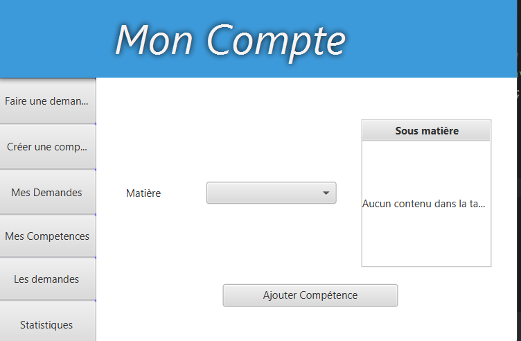
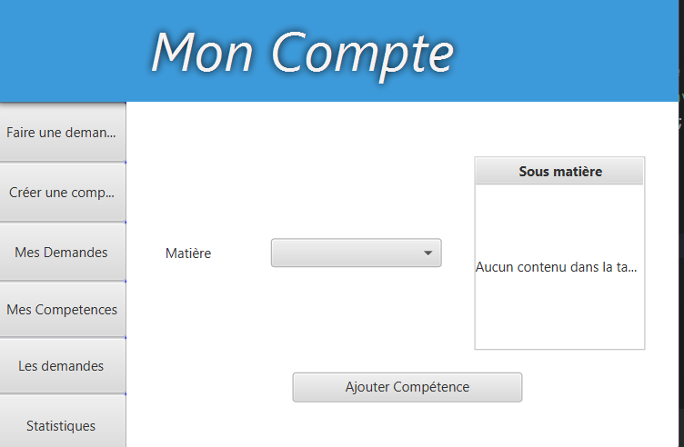

Projet n°1: Help ORT
Voici la page de Connexion

Voici la page de Demande
Durant cette formation j'ai effectué de nombreux projets qui m'ont permis de développer mon niveaux de compétences et de rendre plus concret les différents concepts qui m'ont été enseignés.
J'ai pu faire des projets de différentes tailles et qui ont pour but de me faire travailler différentes compétences indispensables de l'informatique. (Algorithmie, POO etc...).
Voici la page de Connexion
Voici la page de Demande

Voici un workflok concernant des factures


Page d'acceuil, où l'on visualise la prise de rendez vous et le planning: